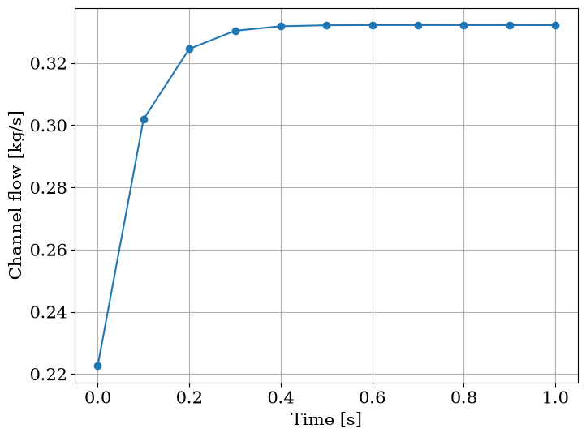

Diagnose a failing solve
This page breaks the plate loop of Get a steady solve to converge and reads each fault in the order that costs least: the report, two hand checks, the residual of each calculation, the trajectory a failed transient keeps. A table maps other symptoms to their causes.
[1]:
from functools import partial
import matplotlib.pyplot as plt
import numpy as np
from matplotlib import rc
rc("font", family="serif", size=15)
from stream import State
from stream.aggregator import Solution
from stream.analysis.debugging import debug_derivatives, debug_guess_flows
from stream.analysis.report import report
from stream.calculations import ChannelAndContacts, Fuel, Gravity, HeatExchanger, Junction, KirchhoffWDerivatives, Pump, Solid
from stream.composition import FlowGraph, flow_edge, symmetric_plate, symmetric_plate_steady_state, uniform_x_power_shape, x_boundaries
from stream.jacobians import ALG_jacobian, DAE_jacobian
from stream.physical_models.heat_transfer_coefficient import spl_htc, wall_heat_transfer_coeff
from stream.physical_models.pressure_drop import friction_factor, pressure_diff, rectangular_laminar_correction
from stream.pipe_geometry import EffectivePipe
from stream.solvers import TransientRuntimeError
from stream.substances import light_water
A loop to break
The loop is the steady page’s, 2 kW in the plate and 6 kPa of pump head. build takes the plate’s funcs, so a build can leave the power out.
[2]:
length, width = 0.7, 0.070
clad_N, fuel_N, clad_w, meat_w = 2, 8, 0.0005, 0.0006
z = np.linspace(0.0, length, 11)
meat = np.zeros((len(z) - 1, fuel_N + 2 * clad_N), dtype=bool)
meat[:, clad_N:-clad_N] = True
fuel = Fuel(
z_boundaries=z,
x_boundaries=x_boundaries(clad_N, fuel_N, clad_w, meat_w),
material=Solid.from_array(np.where(meat, Solid(3500, 750, 40), Solid(2700, 900, 167))),
y_length=width,
power_shape=uniform_x_power_shape(len(z) - 1, fuel_N, clad_N, clad_w, meat_w, length),
meat_indices=meat,
name="Plate",
)
pipe = EffectivePipe.rectangular(length=length, edge1=width, edge2=0.0022, heated_edge=width)
aspect_ratio, re_bounds = pipe.depth / pipe.width, (2000.0, 5000.0)
h_spl = spl_htc("regime_dependent", re_bounds=re_bounds, Lh=length, aspect_ratio=aspect_ratio)
f = friction_factor("regime_dependent", re_bounds=re_bounds, k_R=rectangular_laminar_correction(aspect_ratio))
channel = ChannelAndContacts(
z_boundaries=z,
fluid=light_water,
pipe=pipe,
h_wall_func=partial(wall_heat_transfer_coeff, h_spl=h_spl),
pressure_func=partial(pressure_diff, f=f),
name="Channel",
)
power, p_top, T_hx = 2e3, 1.8e5, 38.0
def build(plate_funcs):
top, bottom = Junction(name="Top"), Junction(name="Bottom")
pump = Pump(pressure=6e3, name="Pump")
riser = Gravity(light_water, disposition=-length, name="Riser")
hx_in, hx_out = HeatExchanger(outlet=T_hx, name="HXIn"), HeatExchanger(outlet=T_hx, name="HXOut")
fg = FlowGraph(
flow_edge((top, bottom), channel),
flow_edge((bottom, top), pump, hx_in, riser, hx_out),
reference_node=(top, p_top),
abs_pressure_comps=[channel],
inertial_comps=[channel],
k_constructor=KirchhoffWDerivatives,
)
agr = fg.aggregator + symmetric_plate(channel, fuel, funcs=plate_funcs).to_aggregator()
return agr, fg, pump
Read the report first
report(agr) from stream.analysis.report, read as in Write a calculation, runs before any solve.
[3]:
agr, fg, pump = build({})
report(agr)
Contains 186 Equations, 9 Nodes, 28 Edges.
Calculation |
Type |
Equation No. |
Unset |
Set Externally |
Missing |
|---|---|---|---|---|---|
Top |
Junction |
0 - 1 |
|||
Channel |
ChannelAndContacts |
1 - 32 |
|||
Bottom |
Junction |
32 - 33 |
|||
Pump |
Pump |
33 - 35 |
pressure, mdot0 |
||
HXIn |
HeatExchanger |
35 - 37 |
|||
Riser |
Gravity |
37 - 39 |
|||
HXOut |
HeatExchanger |
39 - 41 |
|||
Kirchhoff |
KirchhoffWDerivatives |
41 - 46 |
|||
Plate |
Fuel |
46 - 186 |
power, T_top, T_bottom, h_top, h_bottom |
power |
The plate’s Missing column names power. Binding it is the fix.
[4]:
agr, fg, pump = build({fuel: dict(power=power)})
print(f"plate inputs set externally: {list(agr.funcs[fuel])}")
plate inputs set externally: ['power']
The plate now takes its power from funcs.
Check the answer by hand
A converged solve still has to be the plant one meant. The cell runs the energy balance of Hand checks on the channel and adds the components’ pressure gains around the loop.
[5]:
def seed(mdot):
hydraulics = fg.guess_steady_state({channel: mdot, pump: mdot}, T_hx)
pair = symmetric_plate_steady_state(channel, fuel, mdot=mdot, p_abs=p_top, power=power, Tin=T_hx)
return State.merge(hydraulics, pair)
K = fg.kirchhoff
state = agr.save(agr.solve_steady(seed(0.2), jac=ALG_jacobian(agr), tol=1e-10))
mdot, T_out = state[K.name][K.component_edge(channel)], state["Channel"]["T_out"]
cp = float(light_water.specific_heat((T_out + T_hx) / 2))
gains = {name: float(state[name]["pressure"]) for name in ("Channel", "Pump", "HXIn", "Riser", "HXOut")}
print(f"flow: {mdot:.4f} kg/s")
print(f"mdot cp dT: {mdot * cp * (T_out - T_hx):.1f} W")
print("gains [Pa]: " + ", ".join(f"{k} {v:.1f}" for k, v in gains.items()))
print(f"|sum of the gains|: {abs(sum(gains.values())):.3f} Pa")
flow: 0.2227 kg/s
mdot cp dT: 2000.0 W
gains [Pa]: Channel 810.5, Pump 6000.0, HXIn 0.0, Riser -6810.5, HXOut 0.0
|sum of the gains|: 0.000 Pa
The coolant carries off about 2000 W of the 2 kW, and the gains cancel. A balance that misses points at the wiring, not the solver.
Find the calculation that carries the residual
The guess below runs the loop backward, at -0.2 kg/s. debug_derivatives(agr, guess) from stream.analysis.debugging evaluates \(F\), the aggregator’s functional, at the guess and returns it as a State: the residual of each algebraic row, the derivative of each differential one. The cell prints each calculation’s largest entry, then debug_guess_flows, the Kirchhoff flow rows.
[6]:
wrong = seed(-0.2)
for calc, rows in debug_derivatives(agr, wrong).items():
print(f"{calc:>9}: {max(np.max(np.abs(v)) for v in rows.values()):.2f}")
print({k: round(float(v), 2) for k, v in debug_guess_flows(agr, wrong).items()})
Top: 2.39
Channel: 0.00
Bottom: 0.00
Pump: 0.00
HXIn: 0.00
Riser: 0.00
HXOut: 0.00
Kirchhoff: 10977.00
Plate: 0.00
{'(Top -> Bottom, 0)': 0.0, '(Bottom -> Top, 0)': 0.0, '(Top -> Bottom, mdot2 0)': 10977.0, '(Bottom -> Top, mdot2 0)': 0.0}
Two calculations carry it. Kirchhoff’s keys are offset from its equations, so a residual sits under another variable’s key: the loop law, missing zero by about 11 kPa, under (Top -> Bottom, mdot2 0). The junction at the top is about 2.4 K from its mixing temperature. A seed with the physical sign is the cure.
Locate where a transient died
When a run fails keeps the trajectory of a TransientRuntimeError. Its message starts with At t = and the last output time reached, so the run died in the interval after it. The cell doubles the pump head at once and runs with max_steps=50 on a grid that goes to 1 s in tenths, then to 10 s.
[7]:
y0 = agr.load(state)
row = agr.var_index(K, K.component_edge(channel))
pump.p = 1.2e4
grid = np.concatenate([np.linspace(0.0, 1.0, 11), [10.0]])
try:
reached = agr.solve(y0, grid, jacfn=DAE_jacobian(agr), max_steps=50, err_handler=lambda *args: None)
except TransientRuntimeError as err:
t_last = float(str(err).split(":")[0].removeprefix("At t = "))
print(f"{type(err).__name__} between {t_last:.1f} s and {grid[grid > t_last][0]:.1f} s")
reached = Solution(err.t, err.y)
fig, ax = plt.subplots(figsize=(8, 6))
ax.plot(reached.time, reached.data[:, row], marker="o")
ax.set_xlabel("Time [s]")
ax.set_ylabel("Channel flow [kg/s]")
ax.grid()
plt.show()
TransientRuntimeError between 1.0 s and 10.0 s

The first second shows the flow climbing to its new level. Raising max_steps, or adding output times to that interval, lets it finish.
Symptoms and causes
symptom |
cause |
what to do |
where |
|---|---|---|---|
Missing lists an input |
nothing supplies it and it has no default |
draw the edge or bind it in |
|
one calculation’s residual far above the rest |
its part of the guess, or its wiring |
reseed from the helpers |
|
every flow about zero |
no net head: a pump left at |
check each pump’s head |
|
a solved flow of the opposite sign |
an edge drawn against the flow, or a |
check each edge and height |
|
|
a |
solve steady first; raise |
Start from the steady state, Tolerances, a Jacobian and a step cap |
a run that crawls or dies after an event |
the step collapses at the restart, one edge pinned by an algebraic law |
|
|
NumPy warns of a division by zero or an invalid value |
an iterate far from the answer, where a friction or heat-transfer law divides by zero |
reseed nearer the answer |
|
|
a channel with |
less power, more pressure or more flow |
When a channel saturates; A stuck flapper at scale |
A run that completes and still looks wrong is settled by When a result looks wrong. The usual next task: Read results.